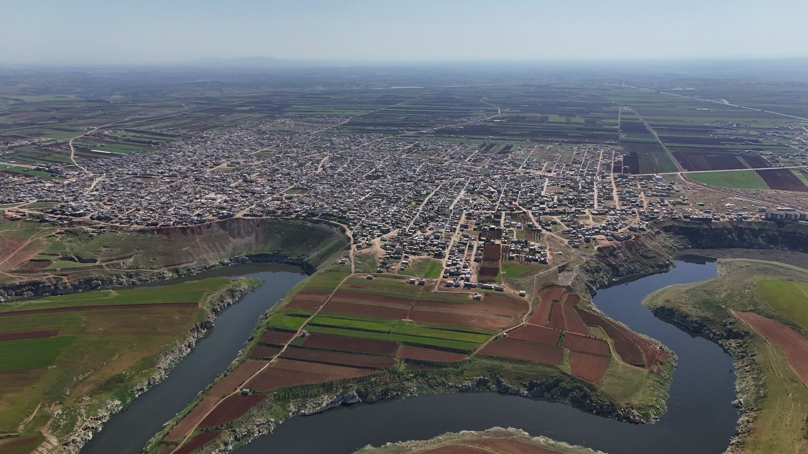

القسم الطبي والصيدليات المناوبة
بيانات الأطباء والصيدليات والمراكز الطبية، وجدول مناوبات اليوم وغداً بالأسماء والأوقات وأرقام التواصل المتاحة.

بوابة حلفايا تجمع أخبار المدينة ودليلها الطبي وأرقامها وخدماتها، لتصل إلى المعلومة التي تحتاجها بسهولة.
تطبيق Android في مرحلة التجربة والتحسين.
تصفح المحتوى العام كزائر، واستخدم حسابك للمشاركة ضمن الصلاحيات المتاحة ومراجعة الإدارة.
بيانات الأطباء والصيدليات والمراكز الطبية، وجدول مناوبات اليوم وغداً بالأسماء والأوقات وأرقام التواصل المتاحة.
ابحث عن جهات الاتصال والخدمات المحلية، وافتح وسيلة التواصل أو الموقع عندما تكون بياناته متوفرة.
اطّلع على الأخبار وأقسام التعليم والسوق والخدمات، وأضف المحتوى من حسابك وفق قواعد النشر.
يدير المطور والمشرفون بيانات الأقسام والمناوبات ومراجعة المحتوى. يمكنك الإبلاغ عن بيانات غير دقيقة أو محتوى مخالف من التطبيق، أو مراسلة الدعم.
معلومات الدليل والمناوبات تساعدك على الوصول للخدمة. تأكد مباشرةً من الجهة المعنية عند الحاجة؛ وقد تتغير البيانات أو أوقات العمل.
اقرأ قواعد استخدام المنصةتوضح سياسة الخصوصية ما يُجمع، وما قد يظهر للآخرين، وكيف تتواصل معنا بشأن حسابك أو بياناتك.
سياسة الخصوصيةللملاحظات، ومشكلات الحساب، وطلبات تصحيح البيانات أو حذفها، راسل إدارة بوابة حلفايا.
Halfaya Gate is a community Android application for Halfaya. It provides local news, listings, contact directories, medical information and pharmacy duty schedules. Public content can be browsed without an account. Account email verification, email recovery and optional Google sign-in are being prepared and are not yet activated. Contact the application operator at the support address above.